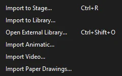
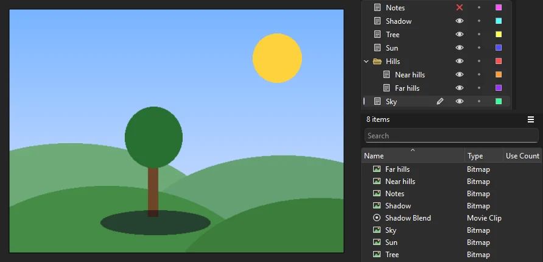
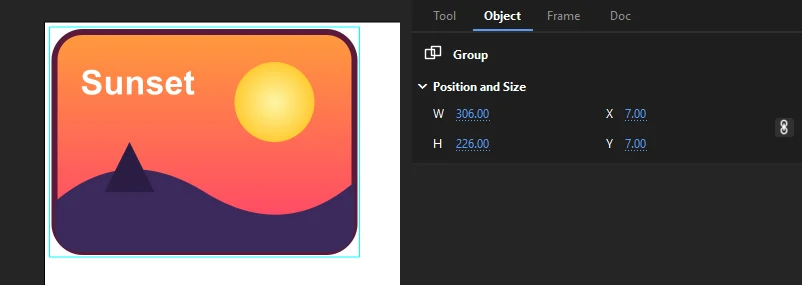
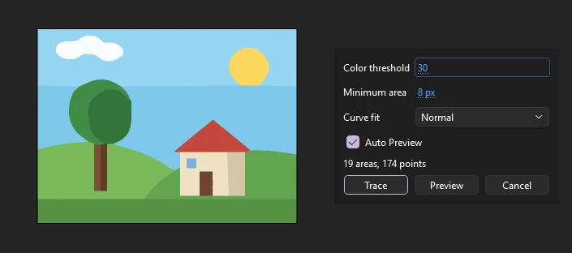
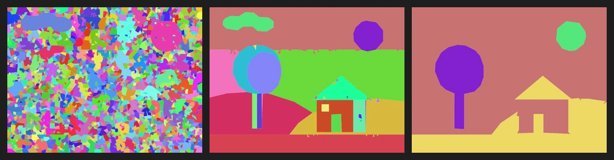
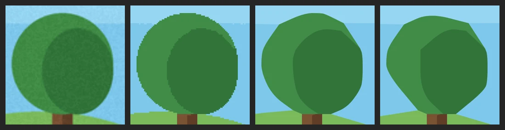
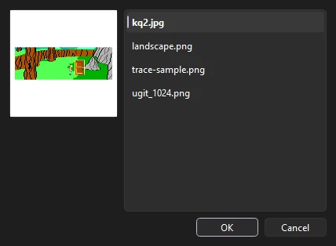

Workspace
Importing artwork
Bring in pictures, layered Photoshop files, vector artwork, sounds, video and other documents, then work with what came in: trace bitmaps into shapes, swap them, fill with them and keep them up to date with their files.
The Import commands

Everything starts from . Pick one or more files in the file browser; Phoenix opens it in the folder you imported from last time.
- Import to Stage...
- Ctrl+R. Adds each file to the library and places it on the current frame of the current layer, at the top-left corner of the stage, selected. Sounds go into the library only. If the current layer is locked or hidden, images go into the library and the status bar says so.
- Import to Library...
- Adds each file to the library without placing anything.
- Open External Library...
- Ctrl+Shift+O. Opens another document's library in a panel of its own, to copy items from. See Libraries of other documents.
- Import Animatic...
- Brings in an animatic's cut (EDL or Final Cut XML) as shot labels, boards and audio. See Start from the animatic.
- Import Video...
- Brings in a video to animate over, as a still for each frame on a guide layer. See Video.
Each import is a single step you can undo, however many files it brings in. Importing a file whose name the library already uses adds a second item, numbered (photo 2.png); nothing in the library is replaced. When part of a file cannot be brought in, Phoenix lists what was left out when the import finishes.
Scripts import too: document.importFile() takes the same files. See Scripting.
What Phoenix imports
| Kind | Formats | Comes in as |
|---|---|---|
| Images | PNG, JPEG, GIF, BMP | A bitmap in the library |
| Layered images | Photoshop (PSD and PSB): RGB, CMYK or grayscale, 8, 16 or 32 bits | A layer for each Photoshop layer, with its pixels as a bitmap |
| Vector artwork | SVG, Illustrator (AI), EPS and PostScript (PS), PDF | Drawing objects, bitmaps and text, grouped |
| Documents and movies | FLA, XFL, SWF | Their library items, and their main timeline as a movie clip |
| Sound | WAV, AIFF, MP3, FLAC, Ogg | A sound in the library |
| Video | MP4, MOV, M4V, AVI, MKV, WebM, FLV, WMV, MPEG | Stills on a guide layer, with Import Video |
Phoenix imports without an options dialog: each kind of file comes in one way, described below. Rearrange the result afterward with the usual tools.
Images
A PNG, JPEG, GIF or BMP becomes a bitmap in the library named after its file, such as kitchen.png. A JPEG is stored as it is, with its Photo compression; other images are stored without loss. A transparent PNG or GIF keeps its transparency, and an animated GIF comes in as its first frame. Images wider than 16,383 pixels are too large to import.
On the stage, an image is a bitmap instance: you can move, scale, rotate and skew it, but its pixels stay as they are in the library. To change the pixels, see Keep bitmaps up to date; to turn them into shapes, see Trace Bitmap.
Image sequences
If you import a single image whose name ends in a number, such as walk_0001.png, and the folder holds others that differ only in that number, Phoenix asks whether to import the whole sequence:
- Yes puts each image on its own keyframe of the current layer, in number order, starting at the playhead. Each bitmap is placed at the top-left of the stage.
- No imports just the file you picked.
Numbers need not be padded or consecutive: walk_1.png, walk_2.png and walk_10.png come in that order. The current layer must not be locked.
Photoshop files
Import to Stage turns each layer of a PSD into a layer of its own, named as it was, above the current layer (and in its layer folder, if it has one). Each layer's pixels become a bitmap in the library, placed where they were on the canvas, so the picture looks as it did. Groups become layer folders, and hidden layers come in hidden. A layer's opacity and its layer mask are kept in its pixels.

A layer with a blend mode (Multiply, Screen, Overlay, Darken, Lighten, Difference, Linear Dodge, Subtract or Hard Light) is placed inside a movie clip named after it, such as Shadow Blend, that blends the same way, since only movie clips can blend. Other blend modes come in as Normal, and Phoenix says which.
Import to Library adds just the bitmaps, one for each layer, without layers or blends.
Large documents (PSB), 16- and 32-bit documents and CMYK documents are read too; their colors are brought to 8-bit RGB. Some things do not come in:
- Adjustment and fill layers have no pixels of their own and are left out.
- Layers clipped to the layer below come in unclipped.
- Text and shape layers come in as their pixels, not as text or shapes you can edit.
- Layer effects (shadows, strokes and so on) are not drawn.
SVG, Illustrator, EPS and PDF files
Vector files come in as artwork you can edit. Each filled or stroked path becomes a drawing object with its fill, stroke color and stroke width; gradients become gradient fills; images become bitmaps in the library, placed where they were; and text becomes static text you can edit. On the stage, everything is grouped as one piece of artwork, in the order it was drawn, at the top-left of the stage. Import to Library makes a graphic symbol named after the file instead, with the artwork inside.

To work on the parts, double-click the group to edit inside it, or choose (Ctrl+Shift+G). To reuse the artwork as a symbol, select the group and choose , or import it with Import to Library.
- SVG
- Paths, rectangles, circles, ellipses, lines, polylines and polygons, with their groups, transforms and opacity, styled by attributes, the
styleattribute or the style sheet's classes; linear and radial gradients;useand symbols; images, embedded or in files beside the SVG; and text, with its font, size, weight and color. - Illustrator (AI) and PDF
- An Illustrator file is read through the PDF copy it carries, which Illustrator saves by default; for a PDF, only the first page is read. Paths with their colors and opacity, spot (Pantone) colors, clipping masks, grouped and placed artwork, gradients, repeating pattern fills (drawn tile by tile), and images, palette images among them. Text comes in as text you can edit, a line at a time where the file placed it, in the font the file names when you have it installed (another font stands in when you do not).
- Illustrator files without a PDF copy
- A file saved with Create PDF Compatible File turned off, and files from Illustrator 8 and older, are read in Illustrator's own format: paths and compound paths, colors (process and spot), gradients, clipping masks and point text. Hidden layers are left out.
- EPS and PostScript
- An EPS that Illustrator saved is read through the Illustrator artwork inside it. Any other EPS or PostScript file is run as a PostScript program, and what it paints comes in: paths, fills and strokes in gray, RGB, CMYK and spot colors, clipping, images and text. The page is the file's bounding box.
Illustrator layers are not kept as separate layers: the whole file is one group on the current layer. To spread the parts over layers, ungroup them and use ; see Distribute to layers.
Other documents and movies
Importing an FLA, an XFL folder's .xfl file or a SWF movie brings in the whole of it: every item of its library, and its main timeline as a movie clip named after the file. Import to Stage also places that movie clip on the current frame. Library items whose names your library already uses come in under new names (Head copy), so nothing of yours changes.
To take only some items from another document, open its library instead with ; see Libraries of other documents. To open a document or movie for editing, use ; Phoenix opens FLA files back to version MX 2004 and SWF movies, as File formats describes.
Sound
A WAV, AIFF, MP3, FLAC or Ogg file becomes a sound in the library, read as 16-bit audio at 44.1 kHz, in mono or stereo. To put it on the timeline, drag it from the library onto the stage or a layer, or drop the file itself on the stage. See Sound.
Video
decodes a video into one still per frame of the document, at its frame rate, on a locked guide layer named after the video, with the stills in a library folder. Guide layers are never published or exported, so the video is a reference to animate over. Before it starts, choose whether to Shrink to the stage width and whether to Import its sound, as a stream. Phoenix reads video with ffmpeg. See Reference video.
Drag and drop, copy and paste
You can drag image, sound, Photoshop, SVG, Illustrator, EPS, PostScript and PDF files from your desktop or file manager onto the Phoenix window:
- Dropped on the stage, they are placed centered where you drop them; a sound is put on the current frame of the current layer.
- Dropped anywhere else in the window, they go into the library.
- An FLA, XFL or PHX file dropped on the window opens as a document instead.
(Ctrl+V) takes what other applications copy:
- A picture
- Becomes a bitmap in the library named Bitmap 1 (or the next free number), placed in the middle of the view.
- Vector artwork
- Artwork copied as SVG (from a browser or a vector editor) or as PDF (from Illustrator) comes in as it would from a file: drawing objects, gradients and text, grouped.
- Files
- Files copied in your file manager are imported to the stage, as if dropped there.
- Text
- Plain text becomes a static text field, in Arial at 20 points, that grows to fit it.
(Ctrl+Shift+V) pastes the same things at the top-left of the stage instead. Going the other way, copying in Phoenix puts a picture and an SVG of the selection on the clipboard, for pasting into other applications. See Cut, copy and paste.
Trace Bitmap
To turn a picture into shapes you can edit, select it on the stage and choose , or right-click it and choose Trace Bitmap. Areas of like color become fills in their average color, and neighboring areas share their edges, so nothing shows through between them. Transparent parts of the picture stay empty.
- Color threshold
- How different two colors may be and still make one area, from 1 to 500: the red, green and blue differences added together. Higher makes fewer, larger areas.
- Minimum area
- From 1 to 1000 pixels. Areas smaller than this join the neighbor they share the most edge with. Raise it to clear away specks.
- Curve fit
- How closely the outlines follow the picture: Pixels, Very Tight, Tight, Normal, Smooth or Very Smooth. Pixels and Very Tight keep every step of the pixels. From Tight on, rounds become curves and straight sides stay straight, with fewer points the smoother you go.
There are no separate settings for corners, color modes or presets: Color threshold, Minimum area and Curve fit are the whole of it. Phoenix remembers the settings you trace with for next time.
Preview traces the bitmap on the stage with the settings as they are, so you can judge the result in place, zoomed in if you like. The dialog then says how many areas and points the trace made, and suggests what to change when there are far too many or too few. Turn on Auto Preview to trace again whenever a setting changes: it waits until you stop dragging a value, so scrubbing stays smooth.

Trace keeps the result as one step you can undo, in the bitmap's place and position, as merge artwork. The bitmap stays in the library. Cancel puts the bitmap back and leaves nothing in the undo history. With several bitmaps selected, all of them are previewed and traced with the same settings.
Choosing Trace Bitmap settings
To try it, download the sample picture (320 by 240 pixels) and import it with . It is flat colors with soft edges and a little noise, like a scanned drawing or a compressed export. Here it is traced at three color thresholds:


- Too low (10): the noise splits every flat color into specks, 1,058 areas in all. It is slow to draw and impossible to edit.
- Right (30): each flat color is one area, 17 in all, and the tree's shadow side stays apart from its lit side.
- Too high (100): 10 areas are left. The two blues of the sky have run together, and so have the two greens of the tree, the hills, and the lit and shaded sides of the house.
Curve fit decides how the outlines are drawn. Here is the tree, enlarged, before tracing and traced at threshold 30 with three curve fits:

- Pixels follows every pixel step: right for pixel art, heavy for anything else.
- Normal rounds the crown into curves that follow the drawing closely.
- Very Smooth uses the fewest points, and the crown loses its round shape.
For this picture, the ideal trace is Color threshold 30, Minimum area 8 px and Curve fit Normal: 17 areas and 173 points, with the sun and the tree as smooth curves and the house as straight lines.
For a picture of your own, turn on Auto Preview and zoom in on a detailed part of the stage. Raise Color threshold until the shades of each flat color become one area, and stop before colors you want to keep apart run together; the area count falls steeply as specks merge, then levels off. Then raise Minimum area if specks are left. Last, choose a Curve fit with as few points as still follow the shapes.
Trace Bitmap suits flat-colored artwork: logos, cartoons and scanned inked drawings. A photograph or a gradient becomes many areas at any setting.
Bitmaps on the stage
Select a bitmap instance and the Properties panel's Object tab shows the library item it shows, with a Swap... button, and its position and size. Right-click a bitmap on the stage for Trace Bitmap, Swap Bitmap and Break Apart.
Swap Bitmap

To show a different picture in the same place, select one or more bitmaps on the stage and choose , or click Swap... in the Properties panel. Pick a bitmap from the library's list, with a preview of each, and click OK.
Every selected bitmap takes the new picture, keeping its position, scale and rotation. To change a picture everywhere it is used, update the library bitmap instead; see Keep bitmaps up to date.
Break apart and bitmap fills
(Ctrl+B) turns a selected bitmap into a rectangle of merge artwork filled with the picture, in the same place. The pixels are no longer a separate object, so you can:
- Select parts with the Lasso, or click an area of like color with the Magic Wand, and delete or move them.
- Erase parts with the Eraser.
- Pick up the bitmap fill with the Eyedropper and paint it into other shapes with the Paint Bucket, where it tiles.
- Move, scale or rotate the picture inside its shape with the Gradient Transform tool.
You can also choose Bitmap Fill in the Color panel and draw new shapes filled with a library bitmap; see Bitmap fills. A bitmap used in a fill stays in the library while the fill uses it.
Bitmap Properties
Double-click a bitmap in the library, or right-click it and choose Properties.... The dialog shows a preview, the bitmap's name, the file it came from (its Source), its size in pixels and when it was imported, and these settings:
- Allow smoothing
- On by default. Draws the bitmap smoothly when it is scaled or turned. Turn it off for pixel art, so pixels stay hard-edged.
- Compression
- Photo (JPEG) or Lossless (PNG/GIF): how a published movie should compress the bitmap. Use Photo for photographs and painted pictures, Lossless for flat colors and sharp edges.
- Quality
- For Photo compression, the JPEG quality from 1 to 100, or Document default (0) to use the quality in the publish settings.
Phoenix keeps Compression and Quality with the bitmap, in FLA files too, so other tools that publish the file use them. Phoenix's own SWF export stores every bitmap without loss. The buttons below the settings act at once:
- Update
- Reads the bitmap again from its source file. Available when that file still exists.
- Import...
- Replaces the picture with another image file, which becomes the new source. Every use of the bitmap shows the new picture.
- Edit With...
- Opens the bitmap in an image editor; see below.
Name and linkage are not set here: rename a bitmap in the library (F2). Bitmaps have no linkage in the Library panel; see Linkage.
Keep bitmaps up to date
When you change an imported picture in another program, bring the change in without placing it again:
- Update. Select one or more bitmaps in the library, right-click and choose Update. Phoenix reads each from the file it came from, and every use of it changes. If a file has moved, Phoenix lists the bitmaps it could not find; choose the file again with Import... in the bitmap's Properties.
- Edit With. Right-click a bitmap and choose Edit With..., then pick the image editor to use; Phoenix remembers it. Cancel to use the program your system opens PNG files with. Phoenix hands the editor a PNG copy of the bitmap, and each time you save it there, Phoenix takes the change, as a step you can undo.
Update works for images imported from their own files. Bitmaps that came from a Photoshop layer, from inside vector artwork, or from the clipboard have no source file to read again: import the file again, or use Edit With.
Some import choices other tools offer do not exist in Phoenix: choosing which Photoshop or Illustrator layers to bring in, flattening a file to one bitmap, turning layers into keyframes, or importing text as outlines. Files are not linked live: change the source and import it again (or Update a bitmap). For a PDF, only the first page is read.